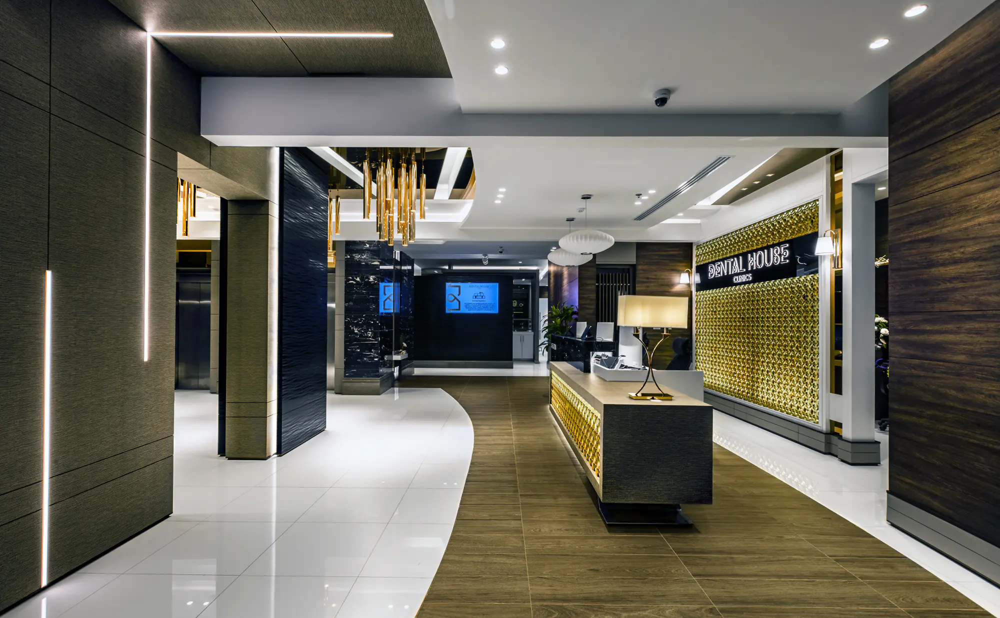
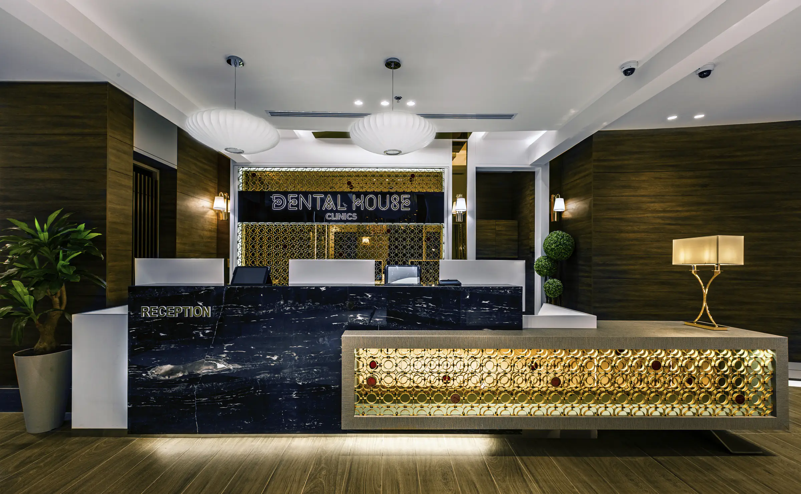
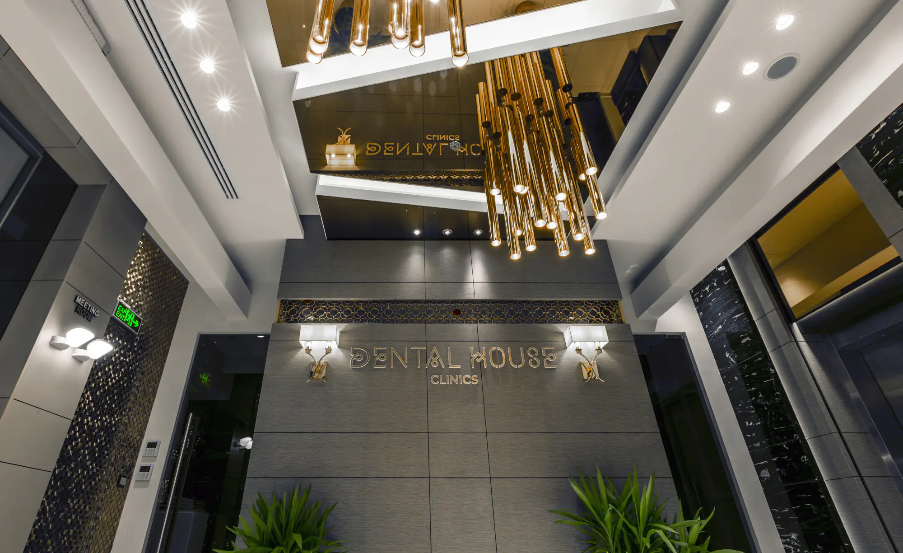
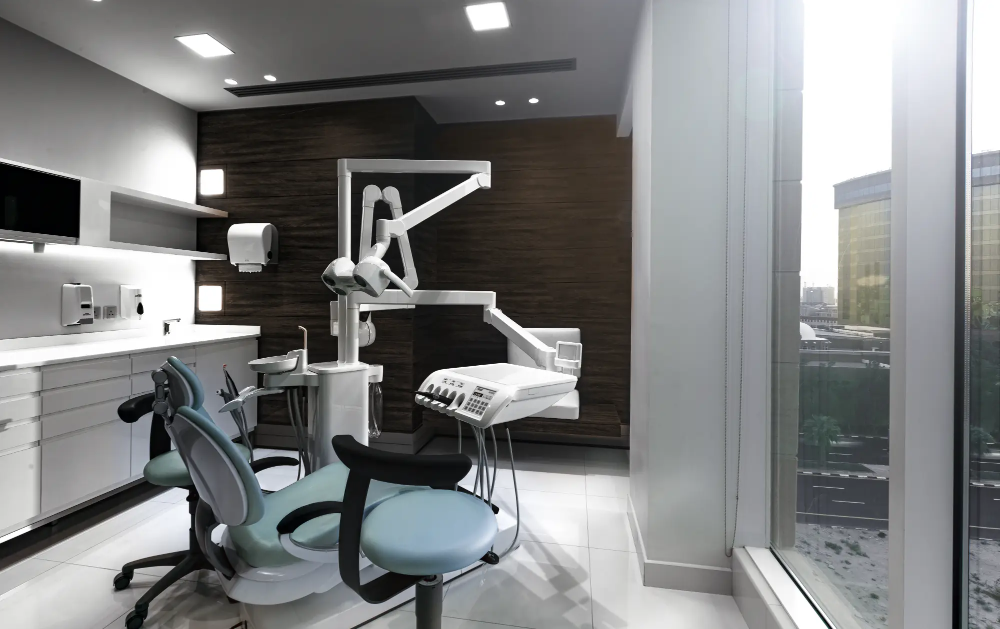
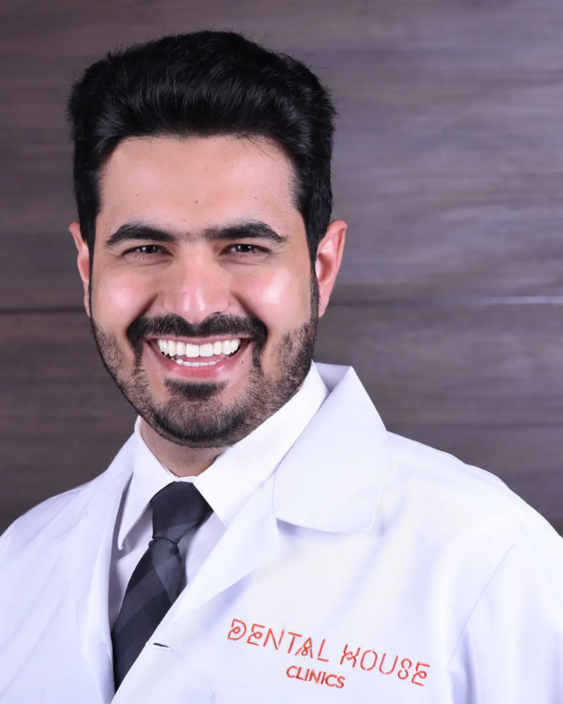
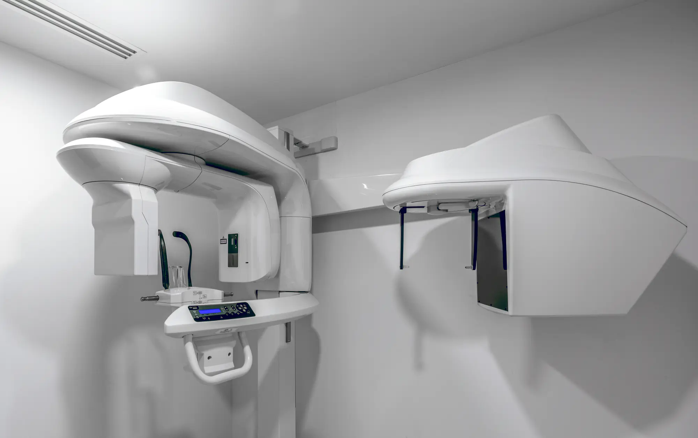
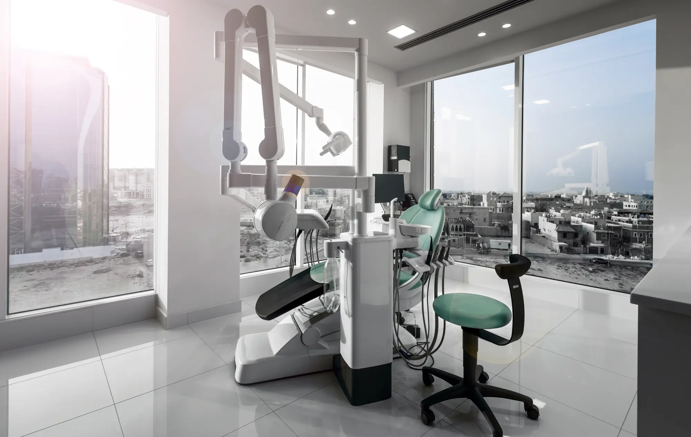
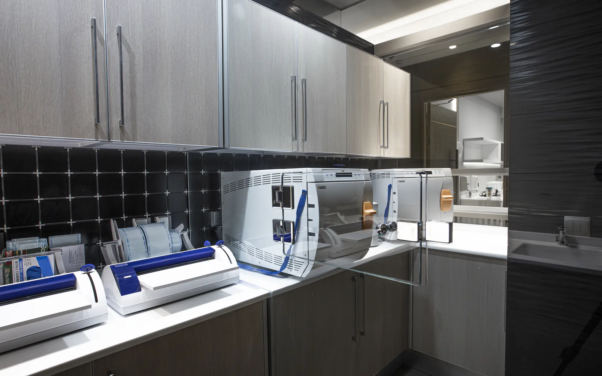
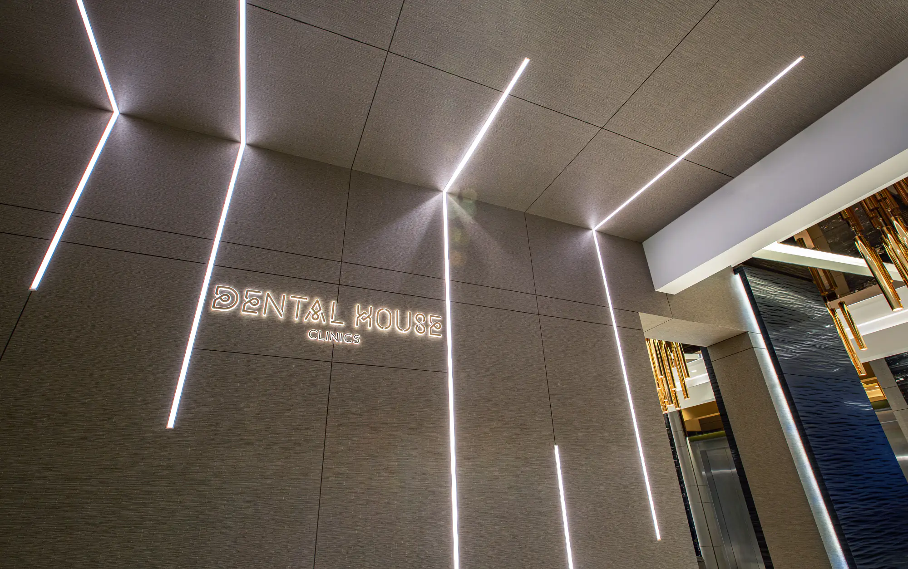

الاستقبال
فهد سنتر على شارع الأمير تركي، الطابق الرابع. أخبرنا بالطبيب الذي تراجعه، أو أنها زيارتك الأولى، ونتولى الباقي.

عيادات أسنان تخصصية على كورنيش الخبر: تقويم وتقويم شفاف، زراعة، علاج عصب، لثة، تبييض وأسنان الأطفال. فهد سنتر، الطابق الرابع.
انبثقت دنتل هاوس من نخبة من أطباء أسنان المملكة، لتكون ملتقى استشاريين وأكاديميين سعوديين يخدمون أهل المنطقة الشرقية في مكان واحد.
كل طبيب عندنا متخصص في مجاله: التقويم، التركيبات والزراعة، علاج العصب، اللثة، الأطفال وذوو الاحتياجات الخاصة، وطب أسنان الأسرة.
جهّزنا العيادة بأحدث الأجهزة والتقنيات وبتصميم راقٍ، لتكون زيارة كل ضيف مريحة. فمراجعونا عندنا ضيوف.

عشر خدمات، وكل واحدة عند الطبيب المتخصص فيها. اضغط على الخدمة لتعرف التفاصيل ومن يعالجها.
كل الخدمات بالتفصيل
التقويم الشفاف (انڤزالاين)، التقويم المعدني والتقويم الخزفي، للأطفال والكبار.
لمن فقد سناً أو أكثر. تتم تحت تخدير موضعي، والتلبيسة النهائية بعد نحو ٣ أشهر.
تعويض الأسنان المفقودة لتعود وظيفتها وجمالها.
إزالة العصب المصاب وحشو التجويف العصبي بمواد خاصة.
إصلاح الأسطح المصابة بأنواع مختلفة من الحشوات للمحافظة على السن.
تبييض منزلي بقوالب مصممة لأسنانك، أو تبييض في العيادة بضوء خاص.
علاج أمراض اللثة والعظم حول الأسنان وتعويض المفقود منها.
خدمات وقائية وعلاجية تناسب كل مرحلة عمرية.
أضراس العقل المطمورة، زراعة العظم، وحالات الوجه والفكين.
إزالة الترسبات عن أسطح الأسنان، وننصح بتنظيف دوري كل ستة أشهر.
اثنا عشر طبيب أسنان سعودياً. اطلب الطبيب باسمه عند الاتصال، أو أخبرنا بما تشكو منه ونحجز لك عند الطبيب المناسب.

تقويم الأسنان والوجه والفكين

علاج عصب وجذور الأسنان

تجميل وتركيب وزراعة الأسنان

جراحة اللثة وزراعة الأسنان

طب أسنان الأطفال وذوي الاحتياجات الخاصة

تجميل وتركيب وزراعة الأسنان

طب أسنان الأطفال وذوي الاحتياجات الخاصة

تقويم الأسنان والوجه والفكين

جراحة اللثة وزراعة الأسنان

تجميل وتركيب وزراعة الأسنان

تقويم الأسنان والوجه والفكين

استشاري طب أسنان الأسرة
كل شيء في طابق واحد من فهد سنتر، من أول جلسة إلى آخر مراجعة.

فهد سنتر على شارع الأمير تركي، الطابق الرابع. أخبرنا بالطبيب الذي تراجعه، أو أنها زيارتك الأولى، ونتولى الباقي.

عندنا غرفة مخصصة لمناقشة الخطة العلاجية. تجلس مع الطبيب وتمرّان على خطوات العلاج قبل البدء.

الأشعة تُصوَّر في غرفة الأشعة الخاصة بنا في نفس الطابق.

غرف العلاج بنوافذ كبيرة وضوء النهار يطل على الخبر.

تُنظَّف الأدوات وتُغلَّف في أكياس معقمة داخل غرفة تعقيم مستقلة.
عندنا طبيبان متخصصان في أسنان الأطفال وذوي الاحتياجات الخاصة، يقدمان الخدمات الوقائية والعلاجية المناسبة لكل مرحلة عمرية، وفي العيادة جهاز الغاز الضاحك.
د. مازن القحطانيأسنان الأطفال وذوي الاحتياجات الخاصة
د. هدى المنديلأسنان الأطفال وذوي الاحتياجات الخاصة

فهد سنتر، الطابق الرابع
شارع الأمير تركي، الكورنيش، الخبر
| السبت | 2 ظهراً - 10 مساءً |
| الأحد | 2 ظهراً - 10 مساءً |
| الإثنين | 2 ظهراً - 10 مساءً |
| الثلاثاء | 2 ظهراً - 10 مساءً |
| الأربعاء | 2 ظهراً - 10 مساءً |
| الخميس | 2 ظهراً - 10 مساءً |
| الجمعة | مغلق |
الرقم الموحد 920 002 721البريد info@dentalhouseclinics.com
